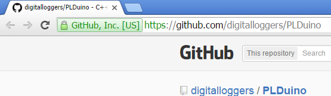
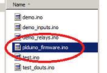

Using Arduino with the PLC
This page explains loading the Arduino environment. Click here for hardware information.
1. Download the correct Arduino compiler. Install. If you already have an existing Arduino installation, delete or move any library files to avoid conflicts.
NOTE: We currently recommend 1.6.13 as the most stable compiler version, but 1.8+ will work fine as well.
2. After installation, start Arduino and select Board: "...Mega 2560":

Connect power to the PLC. Accidentally reversing the polarity won't harm the PLC. Connect a USB cable to the PLC. After automatic driver installation completes, select the the COM port assigned to the device name "Mega 2560" in the Tools menu.
3. Load the simple "blink" example:

Click on the .ino sketch file. Allow Arduino to move the file if it asks. Click the circular right arrow button. You're good to go. You can now replace blink with your own code.
4. Like to revert back to the demo? Load the factory demo code from GitHub... Don't allow Arduino to auto-update drivers. Use the fully tested driver package from GitHub.

Click pldunio_firmware.ino to open the factory demo.
Click the right-arrow under "Edit" to compile, load, and run on the PLC.
Have a look at the sample code from Github.
The Arduino support forum is here.
Have fun with it!
Shipping now. $89 or less!
To achieve economy of scale, we're offering deep quantity discounts to dealers, OEMs and educational users.


(c) 2016 Digital Loggers, Inc.